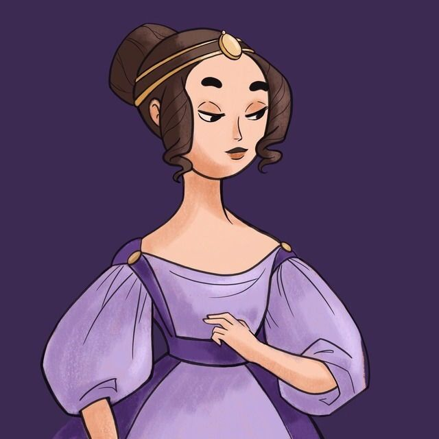
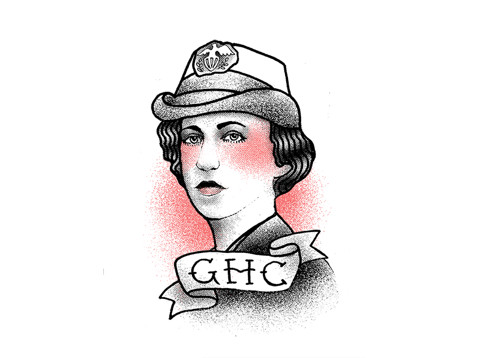
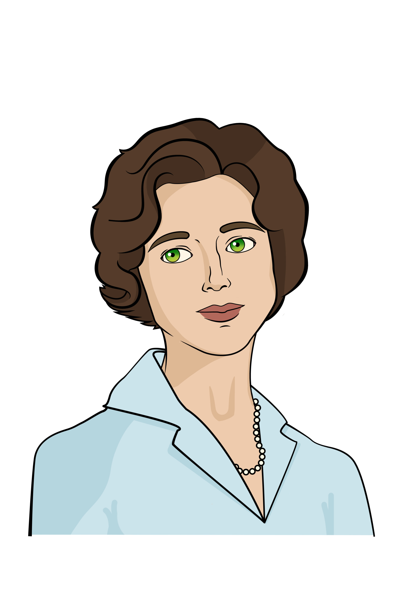
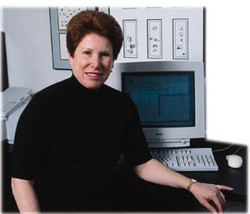
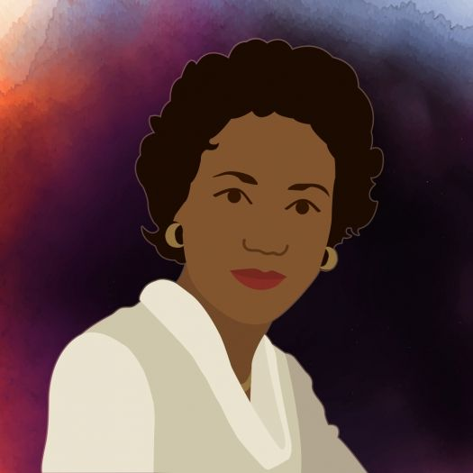
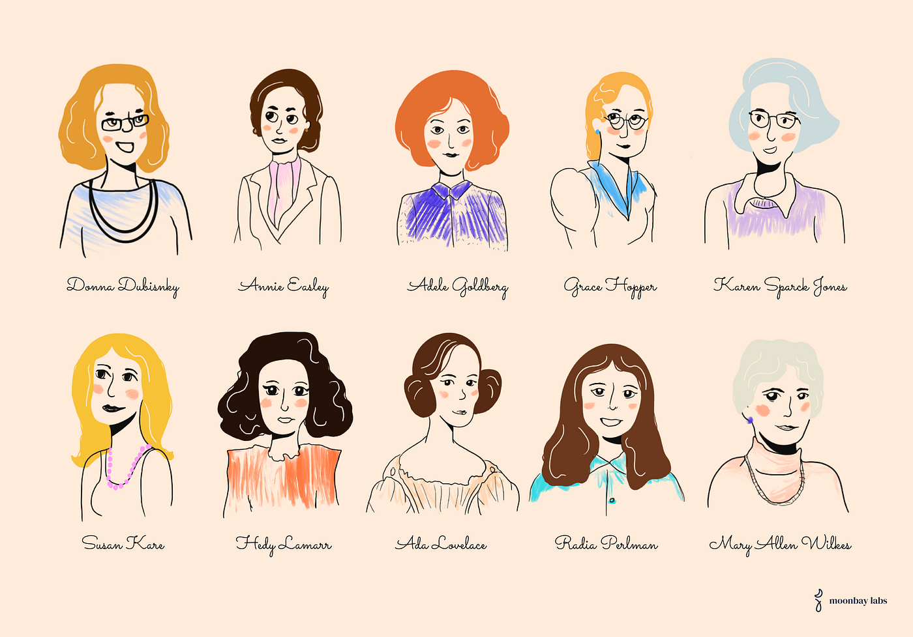

Teknolojide cinsiyet eşitliğini savunan haberler ve bilgisel paylaşımlar yapan sayfa
Teknolojide cinsiyet eşitliğini savunan haberler ve bilgisel paylaşımlar yapan sayfa
Teknolojide Kadınlar
19.yy
Ada Lovelace (1815-1852)
Ada Lovelace’ın makine notları bir bilgisayar tarafından işlenmek üzere yazılan ilk algoritmayı içerir. Günümüzde hayatımızın büyük çoğunluğunu ele geçiren bilgisayar programlarının temelinin atılmasına büyük katkı sağlamıştır.
20.yy
Grace Hopper (9 Aralık 1906 - 1 Ocak 1992)
1944'te Harvard Mark I bilgisayar programcılarından biri olan Grace Murray Hopper, arctanjant serisinin katsayılarını hesaplayan bir program tasarladı ve kendisini “dünyanın büyük ölçekli dijital bilgisayarındaki üçüncü programcı” olarak tanımladı. Aynı zamanda ilk iş odaklı makine olan UNIVAC I bilgisayarının geliştirilmesine de yardımcı olmuştur.
Mary Allen Wilkes (1937-1970)
ilk "kişisel bilgisayar" olarak kabul edilen bilgisayarın geliştirilmesine yardımcı olmakla kalmayarak işletim sistemini yazmak için eve götürdüğü LINC sayesinde uzaktan çalışmayı gerçeğe dönüştürme konusuna yardımcı olmuştur.
Adele Goldberg (1945-)
Çalışmaları, Steve Jobs'un ilk Apple bilgisayarını yaratmasına ilham verdi.Goldberg, 1970'lerde Xerox Palo Alto Araştırma Merkezi'nde (PARC) bir araştırmacıydı. Birlikte Smalltalk-80 programlama dilini oluşturan ve görüntü ekranlarında üst üste binen pencereler veya "Grafik Kullanıcı Arayüzü" (GUI) için altyapı ve tasarım geliştiren bir grup erkek arasındaki yalnız kadındı.
Dana Ulery (1938-)
Dana Ulery, NASA’da çalışmaya başlayan ilk kadın bilim insanıdır. Ulery, çalıştığı dönemde NASA’nın Derin Uzay İletişim Ağı için algoritmalar geliştirmeye çalışmıştır.
Annie Easley (1993-2011)
Kadınların önündeki engelleri yıkmak için her zaman bir rol model olan ilham verici bir kadınlardandır. Enerji dönüştürme sistemlerini araştırmada kullanılan kodun ve ilk hibrit araçlar için kullanılan pil teknolojisi gibi güç teknolojisinin geliştirilmesi ve uygulanmasında görev aldı.
21.yy ve Sonrası
21. yüzyıl, büyük ölçüde teknolojideki cinsiyet farkını azaltmaya ve daha fazla kadını çeşitli teknoloji sektörlerinde çalışmaya çekmeye yönelik tutarlı girişimlerle karakterize edilmiştir. Eşit ücret , paylaşılan ebeveyn izni ve cinsiyet, ırk, yaş, etnik köken ve sosyo-ekonomik geçmişe rağmen liderlik pozisyonlarına erişim talepleriyle 21. yüzyıl hem teknolojide kadınlar için zorlu bir savaş hem de cinsiyet eşitliği için bir dönüm noktasıdır.
